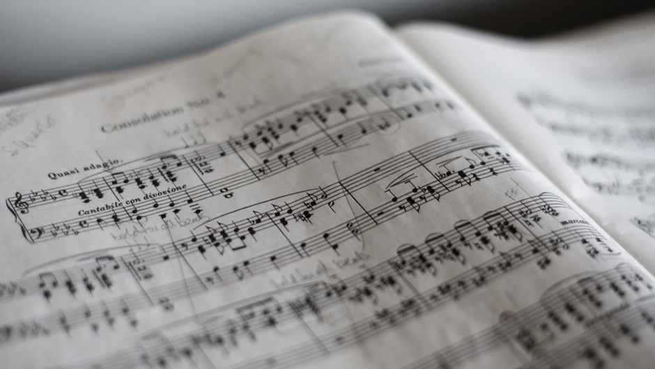

Outside of coding, I'm usually doing the following:
Music
I love to listen to music. Music is one of my passions. Some of my favotite genres are indie, rock, alt, and pop. I will listen to anything that has a good beat though. If you have any music recs please do not hesitate to send them my way!
Not only do I enjoy listening to music, I am also in love with playing instruments. I'll let you in on the inside scoop; I can play a plethera of instruments. My go-to instrument is the acoustic guitar. Aside from guitar, I also play piano, drums, and electric bass. My instrument chops do not stop there. They also include a variety of percussion instruments like: marimba, vibraphone, xylophone, steel pans, cymbals, boomwackers, chimes, gongs...essentially, I can pretty much play whatever falls under the catergory of percussive instrument.
Nature Photography

I often spend time outside. Whether that be walking alongside the Lakefront Trail in Chicago or through the large forest preserves in the Western Illinois suburbs. I love taking hiking trips and traveling.
I enjoy taking photos of whatever nature presents before me. My favorite nature scene to capture is the sky.
Coffee Connoisseur

What keeps me running and going!
I dedicate most of my morning to the craft that is coffee. I enjoy trying different blends of coffee and finding different notes in each one. This allows me to further develop my palette.
Coffee inspires me to continue being curious and to keep broadening my horizons.